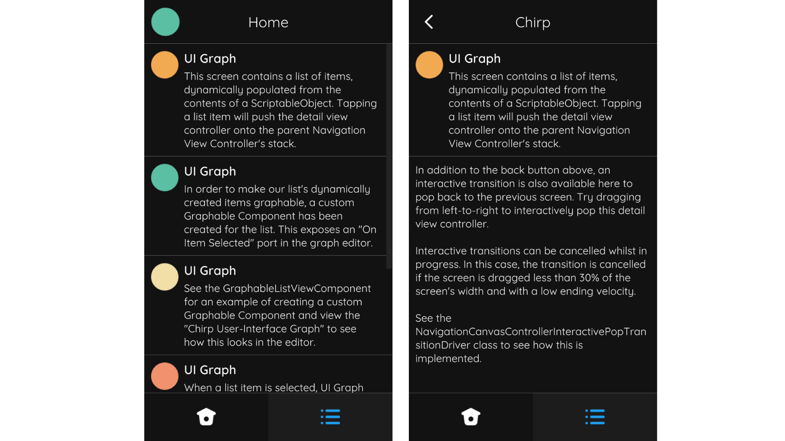
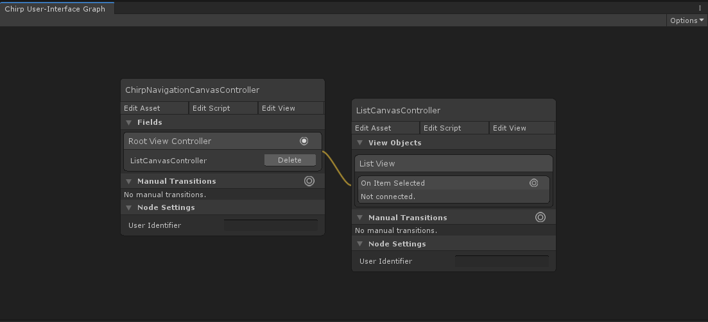

Navigation Canvas Controller
Introduction
A NavigationCanvasController is a specific type of StackCanvasController, designed to provide a user-interface for hierarchical navigation. Like a stack controller, it manages a stack of child view controllers. Each child view controller fills the viewControllersContainer transform and is placed in stack order, making the top-most view controller on the stack visible.
The NavigationCanvasController offers transitions for pushing and popping view controllers on and off its stack. Pushing a view controller onto the stack instantiates its view, embeds it within the navigation controller's viewControllersContainer, and if necessary animates it on-screen. Inversely, popping a view controller off the stack animates it off-screen if necessary, and subsequently destroys it.
In addition, the NavigationCanvasController shows a navigation bar, which includes a title label and back button. Pressing the back button pops a view controller off the stack. By default, a navigation controller animates child view controllers sideways to reflect moving through levels of a hierarchy.
Use a NavigationCanvasController to provide a hierarchical interface scheme. For example, the Chirp demo shown below displays a list of items contained within a navigation controller. Tapping an item pushes the item detail view controller onto the navigation controller's stack. Tapping the back button pops the item detail screen off the stack and returns the user to the list of items.
 Left: The list view controller contained with a navigation controller. The list view controller is the navigation's controller's root view controller. Right: Tapping an item in the list pushes the item detail view controller onto the navigation controller's stack. The navigation bar's title is updated accordingly and its back button becomes visible.
Creation
To create a NavigationCanvasController select Create/UI Graph/UI Canvas/Navigation Canvas Controller from the Unity menu. This will create an asset instance of the NavigationCanvasController and a view prefab.
The template that UI Graph will use when creating navigation canvas controllers can be changed in the package settings.
Presentation
Present Using A Graph (Recommended)
To present a navigation controller from a graph, add the navigation controller to the graph and configure its root view controller by connecting the Root View Controller field to the desired view controller.
 Configuring the navigation controller's root view controller to be the ListCanvasController.
Present From Script
To present a navigation controller directly from script, instantiate a new navigation controller instance, instantiate its root view controller, and use SetRoot to configure its root view controller.
public class YourCanvasController : CanvasController
{
// A reference to our navigation canvas controller asset, configured in the inspector.
public NavigationCanvasController navigationControllerTemplate;
// A reference to the root canvas controller asset, configured in the inspector.
public CanvasController rootCanvasControllerTemplate;
private void PresentNavigationController()
{
// Instantiate the navigation controller.
NavigationCanvasController navigationController = Instantiate(navigationControllerTemplate);
// Instantiate the root view controller. (Remember that this doesn't load its view into memory at this point.)
CanvasController rootViewController = Instantiate(rootCanvasControllerTemplate);
// Set the navigation controller's root view controller.
navigationController.SetRoot(rootViewController);
// Present the navigation controller.
Present(navigationController);
}
}
Appearance
The navigation controller's layout can be adjusted in its view.
The viewControllersContainer transform determines where the navigation controller will place its child view controllers.
The navigation bar can be modified, replaced, or removed entirely. The NavigationCanvasController has no dependency to its navigation bar; this is achieved by using the Canvas Navigation Transition Notifier object in the view to synchronize the bar components' updates to the navigation controller's transitions. You may wish to use a similar pattern when modifying the view.